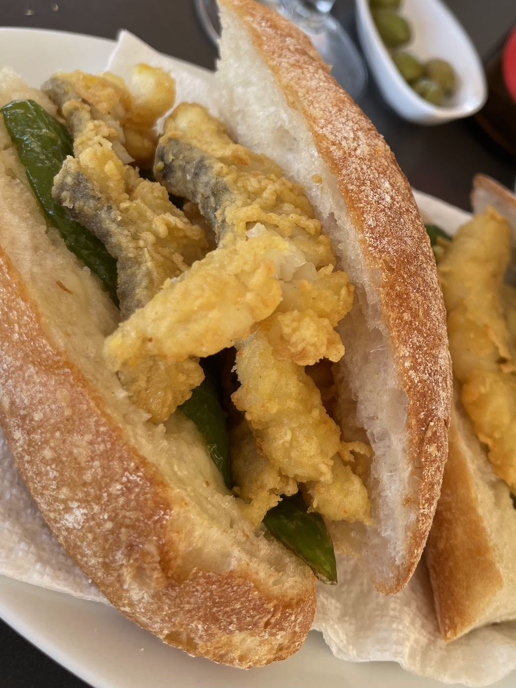
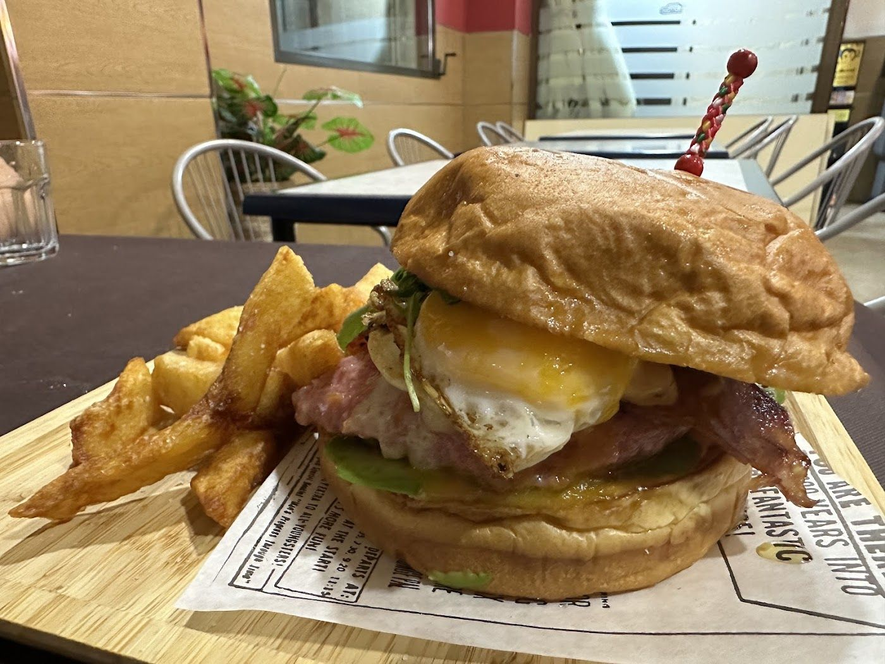
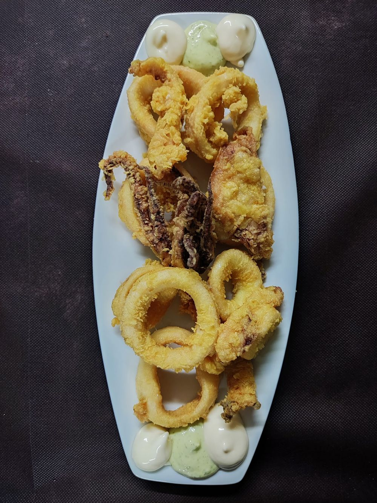
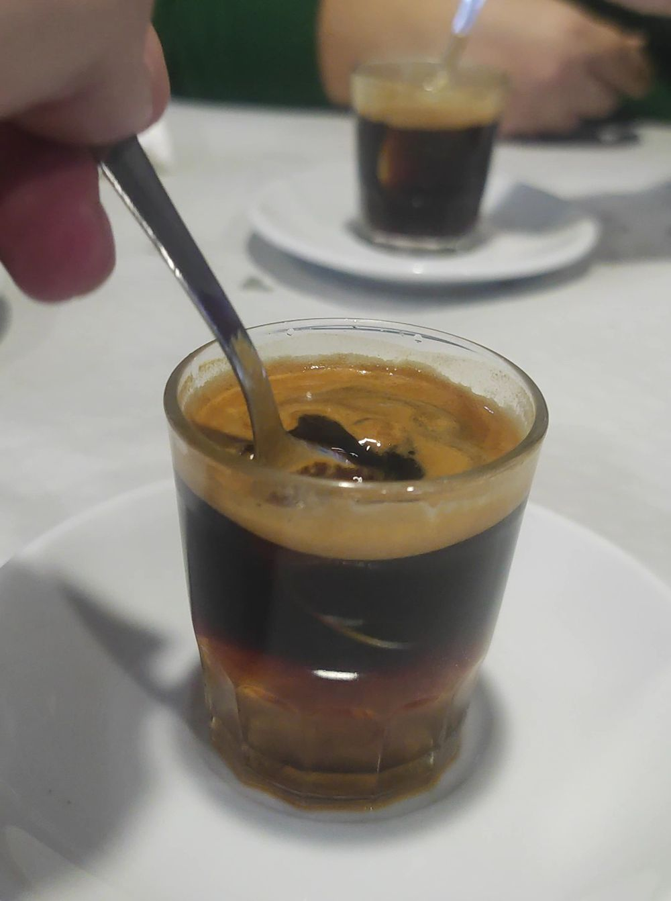
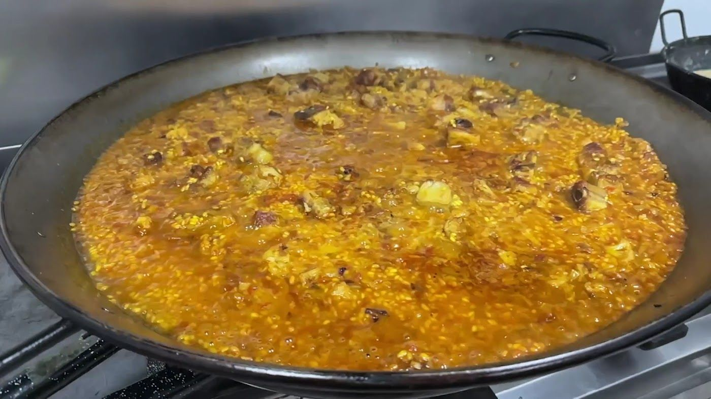
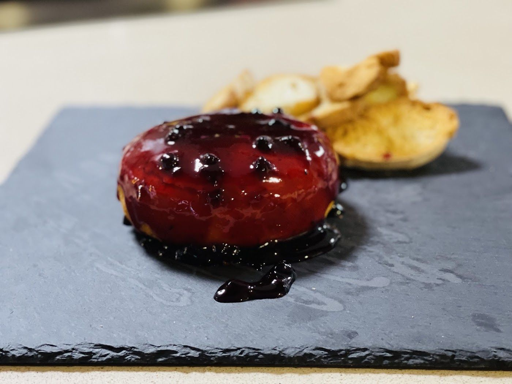
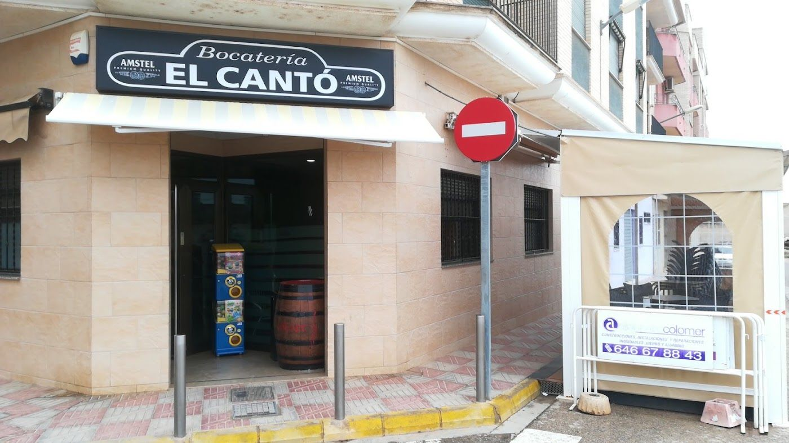
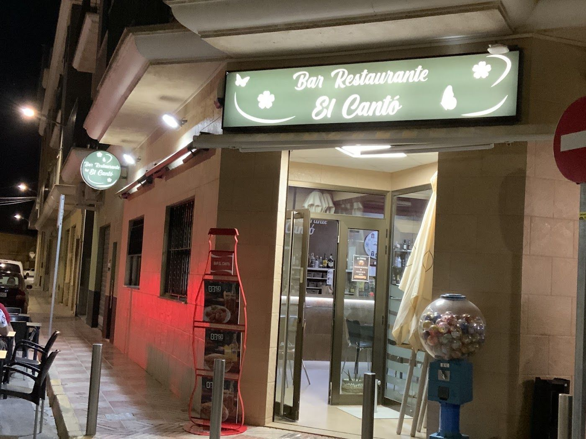
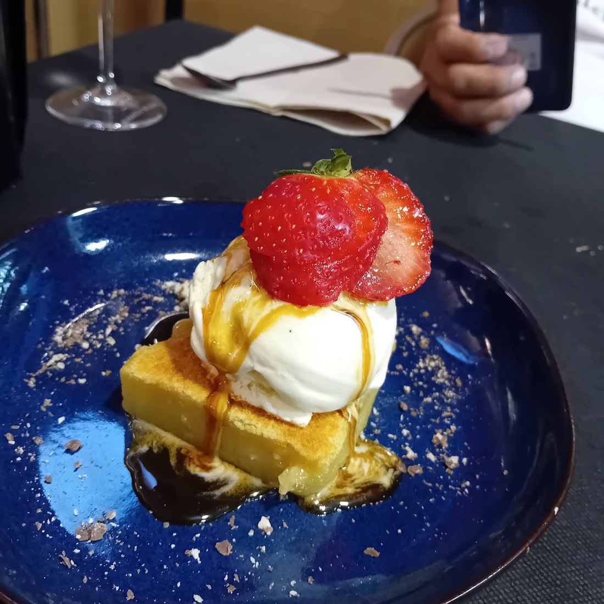
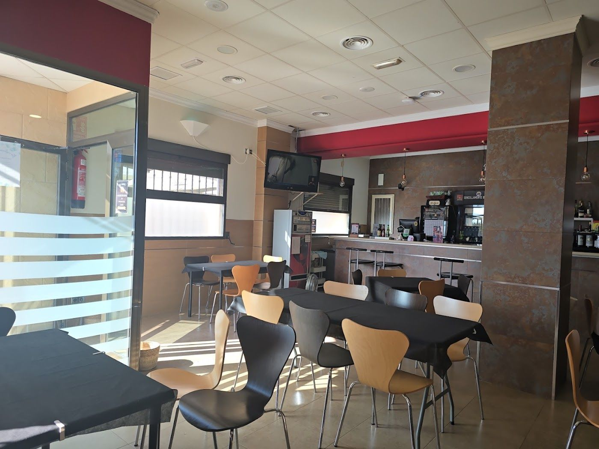

Lechón
BocadilloCerdo a baja temperatura con encurtido de cebolla morada y cilantro fresco.
6,50 €
Pedirlo por WhatsAppComprobando horario…
Cantó, en valenciano, es esquina. Pan de pueblo, cocina casera y cenas de viernes y sábado en Benifaió.

De la primera hora de la mañana al cierre de madrugada del fin de semana. Esto es lo que se sirve en El Cantó.
El café, dicen las reseñas, sale perfecto. Abrimos a las 7:00 de lunes a viernes, salvo martes (9:00).
El almuerzo valenciano de toda la vida: bocadillo cortado por la mitad en pan de pueblo crujiente.
Ensaladita valenciana, cacaos del collaret y el plato de cada día. Pregunta por el menú de hoy.
Una caña fría, unas olivas y una ración de calamares.
Los viernes y sábados de noche, hasta las 2:00. Croquetas de pollo caseras, patatas trufadas y queso frito con mermelada de arándanos.
Los bocadillos mandan. Detrás vienen las raciones, el menú del día y los postres.
Cerdo a baja temperatura con encurtido de cebolla morada y cilantro fresco.
6,50 €
Pedirlo por WhatsAppSecreto a dados con pimiento italiano, patatas fritas y salsa gaucha. Con cebolla frita extra, si se pide.
6,50 €
Pedirlo por WhatsApp


Sepia tierna, rebozada, en pan de pueblo.
Para quien quiere probar algo distinto del bocata.
Jugosa y con patatas.
Fritos al momento, con sus salsas.
Hechas en casa.
Para compartir, o no.
Para acompañar cualquier cosa.
Bien calentito, para cerrar el almuerzo.
Y cada día, el menú del día.
4,3 sobre 205 reseñas
«Bar Restaurante El Cantó es una joya en Benifaió. La comida es simplemente excepcional, con una relación calidad-precio inmejorable. Cada plato está preparado con esmero y se nota la calidad de los ingredientes. He comido muy bien aquí y sin duda es la mejor alternativa en Benifaió para disfrutar de una excelente comida. ¡Un lugar encantador que no te puedes perder!»
«He almorzado varias veces y he de decir que los bocadillos están muy buenos y la atención es rápida y muy amable 👍🏻»
«Si tuviese que definir el servicio y la comida con una sola palabra sería ESPECTACULAR. Fuimos a comer un menú en donde nos pusieron una ensalada muy fresquita y típica de Valencia, el pan bao con calamares, increíble !! Además, fuimos en la noche, donde probamos las croquetas de pollo, súper ricas y caseras, las patatas trufadas y el queso frito con mermelada de arándanos. Si tuviésemos que escoger solo un plato no podríamos decir cual fue el mejor. Finalmente nos pedimos una hamburguesa de pollo, que para ser de pollo estaba muy jugosa. Recomendable al 100% tanto el servicio como la calidad de comida, ya que el rango de precios es más que razonable para lo que te ofrecen. Sin duda alguna, repetiremos!!»
Fotos de la esquina, de la barra y de la mesa. Más en el Instagram de El Cantó.






Comprobando horario…
Bar Restaurante El Cantó
Carrer de la Mestra Pepita Olivé Martí, 4, 46450 Benifaió (Valencia)
961 78 10 44